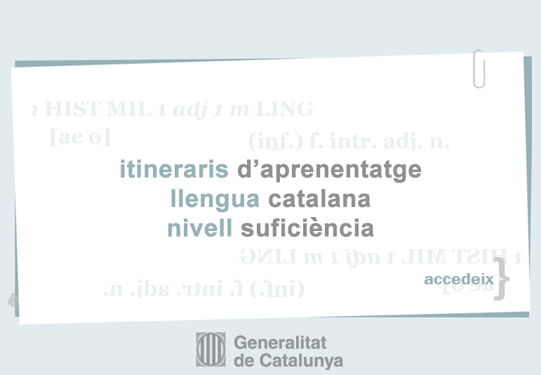

Aquesta obra està subjecta a una llicència de Reconeixement-Compartir Igual 2.5 Espanya de Creative Commons
Accessibilitat - Política de galetes
|  |
Aquesta obra està subjecta a una llicència de Reconeixement-Compartir Igual 2.5 Espanya de Creative Commons
Accessibilitat - Política de galetes